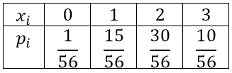
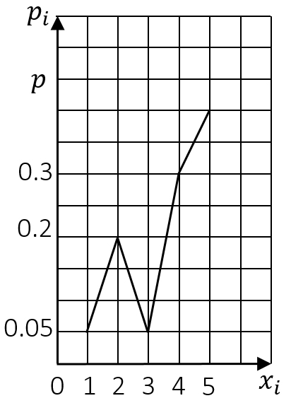
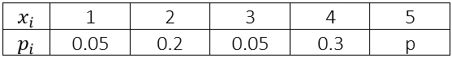

7 СЛУЧАЙНЫЕ ВЕЛИЧИНЫ
7.1 ВИДЫ СЛУЧАЙНЫХ ВЕЛИЧИН
Случайная величина – величина, которая в результате испытания принимает одно значение, заранее неизвестное и зависящее от случайных причин, которые заранее не могут быть учтены
Обозначение случайных величин: $X$, $Y$, ...
Значения, которые принимает случайная величина $X$, обозначаются $x_1$, $x_2$, ...
Для случайной величины $Y$ – $y_1$, $y_2$, ...
Различают два вида случайных величин:
1) дискретные случайные величины
2) непрерывные случайные величины
Дискретная случайная величина – величина, которая принимает отдельные значения с определенными заданными вероятностями
Два типа дискретных случайных величин:
1) с конечным числом значений (например: число попаданий из 100 выстрелов – случайная величина со 101 значением, а именно: 0, 1, 2, ..., 100)
2) с бесконечным числом значений (например: число выстрелов до первого попадания – случайная величина со значениями 1, 2, 3, ...)
Непрерывная случайная величина – величина, которая может принимать любые значения из замкнутого или открытого интервала
Примеры непрерывной случайной величины: дальность полета снаряда, время работы прибора до поломки, курс доллара и т. п.
Закон распределения случайной величины – всякое соотношение, устанавливающее связь между возможными значениями случайной величины и соответствующими им вероятностями
7.2 ДИСКРЕТНЫЕ СЛУЧАЙНЫЕ ВЕЛИЧИНЫ
Для дискретной случайной величины закон распределения может быть задан в виде таблицы, графика или с помощью интегральной функции распределения
При табличном задании первая строка содержит возможные значения случайной величины, а вторая – их вероятности, причем $\sum_{i=1}^{n}{p_i}=1$
Такая таблица называется рядом распределения дискретной случайной величины
Пример
В урне находятся 8 шаров, из которых 5 белые и 3 черные
Из нее вынимают наудачу 3 шара
Составить ряд распределения случайной величины X – числа вынутых белых шаров
Решение
$X$ может принимать следующие значения: $x_1=0$, $x_2=1$, $x_3=2$, $x_4=3$
Найдем соответствующие этим значениям вероятности:

$P\left(X=0\right)=\frac{C_5^0×C_3^3}{C_8^3}=\frac{1}{56}$
$P\left(X=1\right)=\frac{C_5^1×C_3^2}{C_8^3}=\frac{15}{56}$
$P\left(X=2\right)=\frac{C_5^2×C_3^1}{C_8^3}=\frac{30}{56}$
$P\left(X=3\right)=\frac{C_5^3×C_3^0}{C_8^3}=\frac{10}{56}$ или $P\left(X=3\right)=1-\frac{1}{56}-\frac{15}{56}-\frac{30}{56}=\frac{10}{56}$
Примечание
Мы можем вынуть 0, 1, 2 или 3 белых шара
При графическом задании дискретной случайной величины на оси абсцисс откладываются всевозможные значения случайной величины, а на оси ординат – вероятности этих значений
Ломаная, получаемая соединением этих точек, называется многоугольником распределения
Пример
На рисунке изображен многоугольник распределения дискретной случайной величины $X$
Определить значение вероятности при $X=5$
Решение

$p=1-0.05-0.2-0.05-0.4=0.4$

Интегральная функция распределения – функция $F(x)$, определяющая вероятность того, что случайная величина $X$ примет значение, меньшее, чем $x$, т. е.:
$F(x)=P(X < x)$
Свойства интегральной функции распределения:
1) $F(x)$ ограничена, т. е. $0≤F(x)≤1$
2) $F(x)$ – неубывающая функция: если $x_1>x_2$, то $F(x_1)≥F(x_2)$
3) $\lim_{x\to∞}{F(x)}=1$, $lim_{x\to-∞}{F(x)}=0$
4) $F(x)$ непрерывна слева, т. е. $lim_{x\tox_0-0}{F(x)}=F\left(x_0\right)$
Замечание
Интегральная функция распределения любой дискретной случайной величины есть разрывная ступенчатая функция, скачки которой происходят в точках, соответствующих возможным значениям случайной величины и равны вероятностям этих значений
Сумма всех скачков равна 1